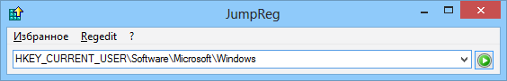

JumpReg
Назначение
Прыжок в реестр.

Утилита позволяет перейти в указанный раздел реестра. Напоминает адресную строку эксплорера / браузера.
В файле JumpRegFav.ini находится избранное. История кэшируется в раскрывающемся списке. Если в истории уже содержится раздел в который осуществляется переход, то пункт истории перемещается в начало списка. Избранное при вызове не попадает в историю. Переход осуществляется клавишей Enter (выбор в избранном или истории происходит с автопереходом).
Вы можете вертикально выделить строку в reg-файле/браузере и вызвать горячую клавишу, при этом переносы строк и квадратные скобки будут убраны и выполняется переход ка разделу. Если выделенный текст/код содержит несколько строк с разделами, то предлагается импорт в раскрывающийся список. Рекомендуется использовать горячую клавишу Ctrl, так как при её использовании копирование выделенного текста происходит автоматически. Если поле пустое и используется кнопка или Enter, то обрабатывается буфер обмена.
JumpReg поддерживает передачу раздела реестра через ком-строку. Для этого например в редакторе Notepad++ нужно добавить строку команду либо по F5, либо в файл shortcuts.xml добавить
"$(NPP_DIRECTORY)\JumpReg.exe" "$(CURRENT_WORD)"
Данная команда указывает клавишу Ctrl+G, путь к JumpReg.exe находящийся в корне каталога Notepad++ и переданное в качестве параметра $(CURRENT_WORD), что является выделенный текст в редакторе. Путь и передаваемый параметр заключены в кавычки " (это обязательно) так как могут содержать пробелы. При выделении строки также как и в предыдущем случае можно вертикально выделять, захватывая перенос строки и квадратные скобки и тире.
Утилита содержит в комплекте известную бесплатную полезную утилиту RegScanner.exe, с помощью которой удобно выполнять поиск в реестре. Найти её можно по ссылке http://www.nirsoft.net/utils/regscanner.html. Переход выполняется с использованием командной строки для RegScanner.exe. При этом использование x86 или x64 версии реестра определяется x86 или x64 версией RegScanner.
Выбор способа перехода к разделу реестра содержит четыре варианта и использует какую либо из трёх утилит (regjump.exe, RegScanner.exe, nircmd.exe) или без сторонних утилит. regjump.exe - не поддерживает Win7 x64.
Утилита была создана благодаря обсуждению на ресурсе oszone.net, полезным советам Vadikan в частности юзабельности и корректировки текстов и Morpheus - советы и тестирование.